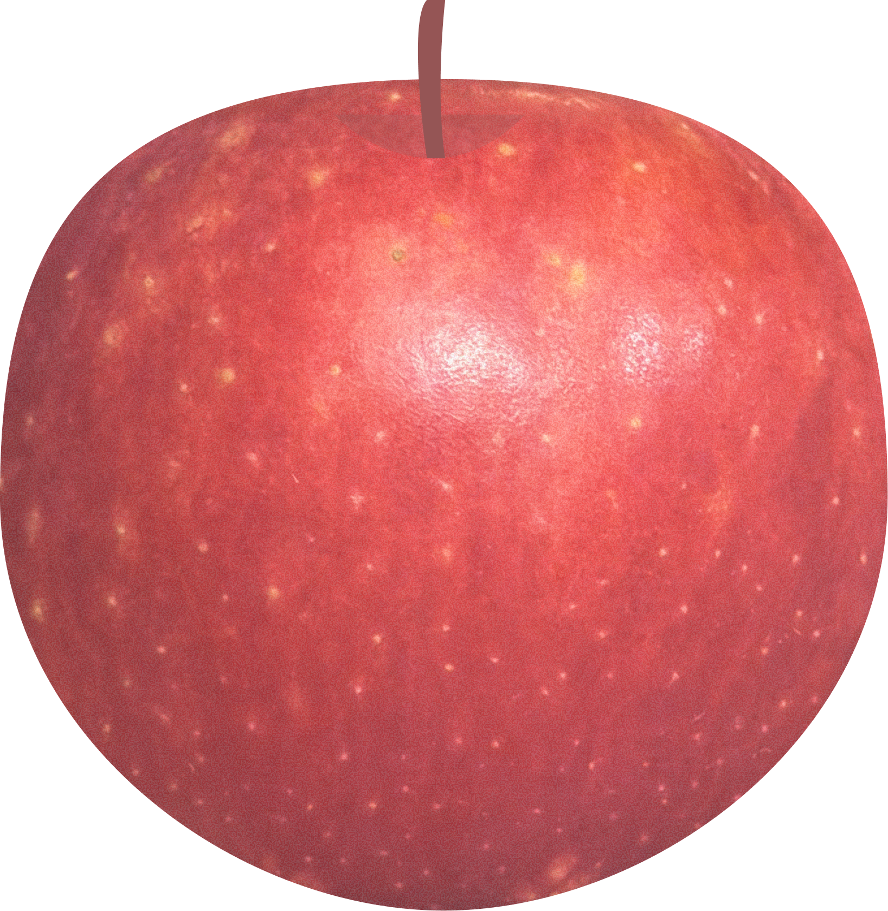

tap to taste ↑
Washington State, USA
Discovered by chance in a Minnesota orchard when a bee cross-pollinated a Honeycrisp with an unknown variety. Sweet, crunchy, with notes of honey, caramel, and a hint of molasses.
I had already written this one off. The first time, it was underwhelming — not as sweet as everyone said. Then I found the organic version and bought it mostly out of curiosity. It was completely different. Pure sweet, thin skin, firm flesh — almost like eating a snack rather than a fruit. It also went bad faster than anything else I've tried. Maybe that's what real sweetness costs.
I was wrong. This is the one everyone was talking about.